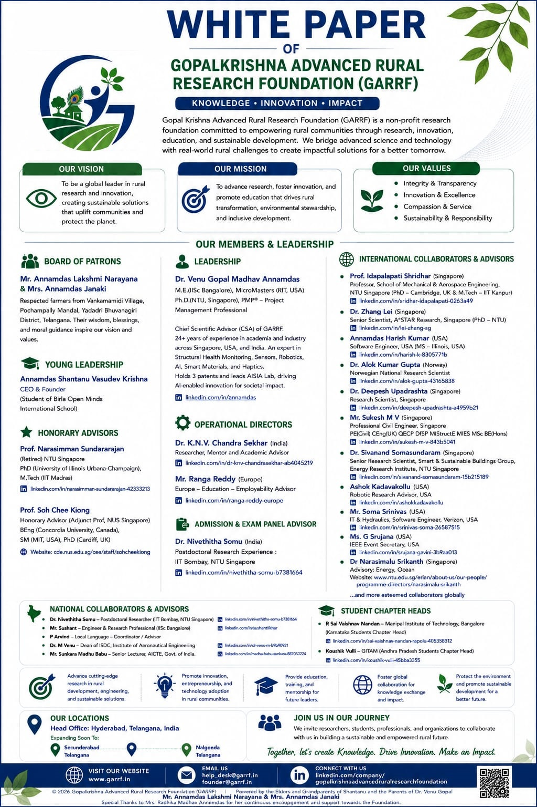

Research, knowledge and innovation publications of the GopalKrishna Advanced Rural Research Foundation.
The GARRF White Paper Series presents knowledge, research perspectives and ideas supporting education, innovation, rural development, science and sustainable development.

Official White Paper of the GopalKrishna Advanced Rural Research Foundation (GARRF).
Version 1.0
Published
8 August 2026
Official publication in the GARRF White Paper Series.
The GARRF White Paper Series is established to document and share research, knowledge, ideas and perspectives relevant to science, technology, education, rural development, innovation and sustainable development.
Each publication is assigned a unique GARRF White Paper number and version number for systematic documentation and future revisions.